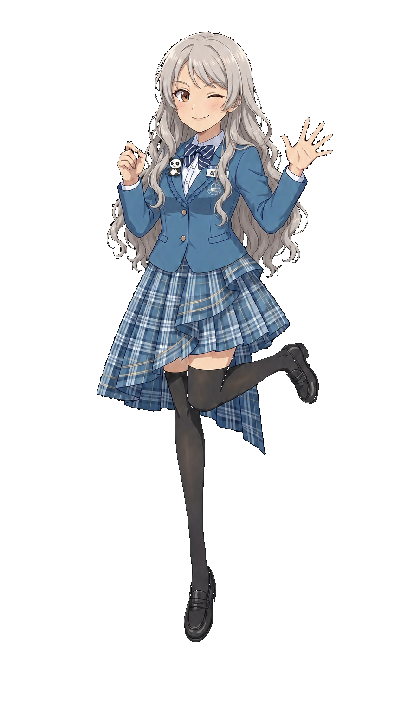

심세이 창전선
Shim Se-i | 沈世伊 | Se-i Shim
| 심세이 Shim Se-i |
|
|---|---|
|
 기본
SD
효빈교통공사 창전선 공식 마스코트
|
|
| 이름 | 심세이 (Shim Se-i) |
| 나이 | 17세 (2008년생) |
| 생일 | 11월 12일 [1] |
| 신분 | 월삼여자고등학교 1학년 (재학) 레일루미네 창전선 홍보대사 |
| 신장 | 158cm |
| 출신지 | 효빈광역시 창전구 창전동 |
| 학력 |
창전초등학교 (졸업) 월삼여자중학교 (졸업) 월삼여자고등학교 (재학) |
| 가족 관계 | 부모님 (스페인인 어머니, 한국인 아버지) |
| MBTI | ESFP (자유로운 영혼의 연예인) |
| 별명 | 스카이라인의 지배자, 구소쿠무시, 짭라멩코, 창전의 아가씨 |
| 성우 |
日: 페이튼 나오미 韓: 장미 |
| 관련 노선 | ■ 창전선 |
"¡Hola! 창전의 스카이라인, 무이 비엔(Muy bien)하게 모시겠습니다! Oh, Galaxy~!"
우아함을 연기하지만 본질은 통통 튀는 라틴 하이텐션과 댄스의 소유자. 2026년 5월 대중에게 화려하게 첫선을 보인 창전구의 하늘을 가르는 푸른 모노레일, 창전선의 우아하고도 기괴한(?) 공식 마스코트.
1. 개요
효빈교통공사가 야심 차게 운영하는 하늘색(Vivid Sky Blue, #33AAFF) 노선인 창전선을 상징하는 캐릭터입니다. 8호선의 유리아(17세)와 함께 레일루미네 세계관의 '08년생 막내 라인'을 담당하고 있으며, 공개 직후부터 폭발적인 화제를 모았습니다.
효빈시 최고의 찐부촌이자 낭만의 도시인 창전구(특히 창전동) 출신으로, 스페인인 어머니와 한국인 아버지 사이에서 태어난 다문화 가정 2세입니다.
부촌 아가씨다운 우아함과 세련미를 뽐내며 평소에는 유창한 영어나 스페인어를 섞어 쓰는 최고급 럭셔리 이미지를 추구하지만, 본질은 주체할 수 없는 텐션을 가진 '라틴의 정열' 그 자체입니다. 특히 모노레일이 급제동하거나 예상치 못한 당황스러운 일이 생기면 정체불명의 심해 등각류 댄스(일명 구소쿠무시)를 춰서 창전구민들의 품격(?)에 스크래치를 내곤 하는 갭 모에의 결정체입니다.
2. 상세 설정
2.1. 성격 및 특징 (라틴의 정열과 구소쿠무시)
"¡Dios mío!(맙소사!) 모노레일 흔들리잖아요! 꺄아아악! (양팔을 격렬하게 파닥거린다)"
창전구 특유의 '문화 예술을 사랑하는 여유로운 고소득층' 바이브를 온몸으로 뿜어내도록 기획되었습니다. 승객들에게 인사할 때는 항상 여유로운 영업용 미소와 함께 본토 발음의 감탄사를 연발하여 창전선의 고급스러운 모노레일 이미지를 한껏 끌어올리는 데 집중합니다.
그러나 치명적인 약점이 있으니, 바로 돌발 상황에 극도로 취약하다는 것입니다. 얌전하게 안내방송을 하다가도 갑자기 열차가 덜컹거리거나 짓궂은 승객이 장난을 치면, 뇌 정지가 온 듯 본인도 모르게 양팔을 기괴하게 90도로 꺾고 휘적거리는 춤을 춥니다. 팬덤에서는 이를 '구소쿠무시(심해 등각류) 댄스'라 부르며 신나게 놀리지만, 본인은 얼굴이 새빨개진 채 끝까지 "내 피에 흐르는 스페인 전통 플라멩코의 현대적 변형"이라고 뻔뻔하게 우깁니다. 스페인 사람들이 들으면 뒷목 잡고 쓰러질 소리입니다.
2.2. 학력 및 능력 (월삼여고의 국제 특화 엘리트)
창전동 타워팰리스급 주상복합 아파트에 거주하며 창전초-월삼여중이라는 철저한 엘리트 코스를 밟아, 현재 창전구 창전4동에 위치한 '월삼여자고등학교(月三女高)' 1학년에 재학 중입니다.
월삼여고는 형태상으로는 일반계 고등학교이지만, 국제 특화 및 예체능 엘리트 교육으로 효빈시 내에서 손꼽히는 절대적인 명문교입니다. 교풍이나 우아한 프릴이 달린 교복의 실루엣이 밴드 [Morfonica]의 무대인 '츠키노모리 여학원'과 묘하게 비슷하다는 소리를 자주 듣지만, 세계관 내에서는 어디까지나 '완벽한 우연의 일치'이자 창전구 특유의 고풍스러운 학풍이 반영된 독자적인 결과물이라고 강력하게 선을 긋고 있습니다. 하지만 구청 로비 모니카 포스터 앞에서 셀카를 찍다 들킨 시점에서 설득력은 0에 수렴합니다.
학업 성취도
다국어 언어 능력은 타의 추종을 불허하는 천재 수준이지만, 땀 흘리는 것을 극도로 기피하며 우아함을 지키느라 기본 체력은 완전히 바닥을 칩니다.
| 과목 | 등급 (내신) | 비고 |
|---|---|---|
| 외국어 (영어/스페인어) | 1등급 (수석) | 월삼여고 국제화 특화반의 절대적 에이스. 진상 승객이 나타나면 숨도 쉬지 않고 속사포 스페인어 랩으로 멘탈을 가루로 만들어버립니다. |
| 사회 (세계사) | 1등급 | 특히 유럽사(대항해시대) 파트에서는 흥분해서 교사보다 설명이 길어집니다. (그리고 이 지식은 7호선 자매와의 피 튀기는 역사 기싸움에 요긴하게 쓰입니다.) |
| 체육 | 5등급 이하 | 땀 흘리는 것을 혐오해 체육 시간만 되면 그늘이나 보건실에 숨어있습니다. 세이가 유일하게 격렬하게 움직이는 순간은 모노레일에서 구소쿠무시 댄스를 출 때뿐입니다. |
2.3. 정치 성향 (창전 리버럴의 막내)
- 對 윤재훈 (전 효빈시장 아들) - "품격(Class)이 없는 자들의 표본": 창전구의 특징인 '창전 리버럴(Changjeon Liberal)' 성향을 완벽하게 대변하는 캐릭터. 문화적 다양성과 인간의 품격을 중시하는 세이에게 극단주의자 윤재훈은 그야말로 '미개함의 극치'이자 경멸의 대상입니다. 2024년 총선 당시 윤재훈이 덕후들을 비하했을 때, "¡Qué asco!(역겨워!) 저런 자가 우리 동네에서 표를 받았다는 게 창전구 역사상 최악의 수치예요!"라며 대놓고 진저리를 쳤습니다. 창전역 테러 사건 때도 "지명도 모르는 무식한 바보들(Baka-domo)"이라며 성우의 팩트 폭격을 그대로 인용했습니다.
- 對 윤대환 & 우신면 - "내 모노레일을 늦춘 죄, 절대 잊지 않겠어요.": 아버지 세대인 윤대환 전 시장과 우신면 전 의원이 저질러놓은 악명 높은 '철도 말살 스노우볼' 때문에, 원래라면 진작 개통해 스카이라인을 누볐어야 할 창전선이 억울하게 밀리자 단단히 벼르고 있습니다. "저의 이 우아한 고가 모노레일이 저런 무능한 정치인들 때문에 공기가 밀리다니, 효빈시를 상대로 행정 소송을 걸어야 해요!"라며 분통을 터뜨립니다.
2.4. 외형 및 디자인
은발에 가까운 밝은 회색의 풍성한 웨이브가 들어간 긴 머리카락과 반짝이는 갈색 눈동자가 특징입니다. 데뷔 당시 고고하고 날카로운 비주얼을 베이스로 하면서도, 항상 한쪽 눈을 찡긋거리는 깨방정 윙크와 활기찬 미소를 장착하고 있어 특유의 '라틴 하이텐션' 갭 모에를 선사합니다.
초기 디자인 생머리에서 웨이브 추가 떡상: 초기 일러스트 공개 직전, 기존 생머리 베이스가 타 캐릭터와 외형적으로 너무 닮았다는 의견이 내부에 존재했습니다. 혹시 모를 오해를 차단하기 위해 소심해진 공사 측에서 머리카락 끝부분과 옆머리에 풍성한 웨이브 텍스처를 대거 추가했는데, 이것이 압도적인 입체감을 뽐내며 떡상하게 만든 신의 한 수가 되었습니다.
월삼여고 교복 겸 공식 유니폼: 상의는 프릴 장식이 화려하게 달린 파란색(#0077DD) 블레이저에 파란색 줄무늬 리본 타이를 착용하고 있습니다. 하의는 비대칭 레이어드 디자인의 체크무늬 스커트이며 검은색 오버니삭스와 로퍼를 매치했습니다.
포인트 액세서리: 왼쪽 가슴 포켓의 효빈도시철도 로고와 명찰 위, 옷깃에 달린 뜬금없는 귀여운 '판다 브로치'가 세이를 상징하는 트레이드 마크입니다. 스페인 혈통을 자랑하면서 왜 중국을 상징하는 판다를 달고 다니는지는 세계관 7대 불가사의 중 하나입니다.
2.5. 목소리 및 성우 연기
특유의 맑고 통통 튀는 하이텐션 연기가 200% 완벽하게 반영되었습니다. 평소 "Oh, Galaxy~!"라며 한껏 우아한 척할 때의 고급스러운 콧소리와, 열차가 흔들려서 춤을 추며 당황할 때 삑사리가 나는 처절한 비명 소리의 간극이 예술의 경지라는 평을 받습니다.
특유의 새침하면서도 발랄한 부잣집 아가씨 연기에 최적화되었습니다. 한국판 한정으로 스페인어를 섞어 쓸 때 라틴 억양을 무섭게 살려내어, 진상 승객을 스페인어로 매도할 때의 딕션 포상이 엄청나다는 코어 팬들의 호평이 자자합니다.
3. 인간 관계
레일루미네의 유일한 08년생 동갑내기 듀오. 우아한 교복을 입고 마카롱을 써는 금수저(세이)와, 투박한 작업복에 스패너를 돌리는 공고생(유리아)의 치명적인 만남. 첫 만남 때 유리아가 세이의 모노레일 대차를 분해하겠다고 스패너를 들고 덤비자, 기겁한 세이가 가장 격렬한 구소쿠무시 댄스를 췄다는 전설이 있습니다. 처음엔 으르렁거리지만, 결국 언니들 몰래 간식을 까먹는 영혼의 베프가 되었습니다.
스페인이 필리핀을 무려 300년간 식민 지배했던 역사적 밈. 스페인 혼혈인 세이가 "이 모노레일 구역은 전부 내 거야"라고 잘난 척을 하면, 필리핀계 혼혈인 세정 대리가 눈이 뒤집혀서 "호세 리잘의 이름으로 널 토벌하겠다!"며 결재 서류철로 응징합니다. 세하 역시 조용히 스패너를 쥐고 "독립전쟁의 피가 다시 끓어오른다..."라고 중얼거려 세이를 공포에 질려 떨게 만듭니다.
행정의 신이자 넘볼 수 없는 대학생 언니. 세이는 노아의 압도적인 요약 능력과 엘리트적인 면모를 롤모델로 동경하지만, 노아가 회식 자리에서 '어뮤즈의 광견'으로 흑화하여 미친 샤우팅을 지를 때면 본능적인 공포를 느끼며 "¡Madre mía!(엄마야!)"를 외치고 탁자 밑으로 숨기 바쁩니다.
설정상 22세인 덕희가 17세 세이보다 언니지만, 덕희 성우의 지독한 팬심(럽순이) 설정이 개입되어 있습니다. 덕희가 세이만 만나면 나이 설정을 망각하고 눈을 뒤집으며 "세이 언니!! 핡!! 싸인 좀!!" 이라며 세계관을 부수고 달려들기 때문에, 세이가 필사적으로 도망치는 환장의 톰과 제리 술래잡기가 매일 벌어집니다.
4. 러닝 개그 및 특수 설정
💃 "이건 구소쿠무시가 아니라 플라멩코라고요!"
세이를 상징하는 가장 완벽하고 찰진 러닝 개그. 갑자기 놀라거나 극도로 당황할 때 양팔을 90도로 꺾고 파닥거리는 정체불명의 율동을 미친 듯이 춥니다. 다른 캐릭터들이 진심으로 걱정하며 구소쿠무시(심해 등각류) 흉내를 내냐고 물어보면, 얼굴이 토마토처럼 붉어져서는 "이건 심해 생물이 아니라, 제 스페인의 끓는 피에 흐르는 플라멩코의 정열적인 동작일 뿐이에요!"라고 말도 안 되는 억지를 부립니다.
💬 라틴어 팩트 폭격기
악성 민원인이나 무개념 진상 승객이 난동을 부리면, 겉으로는 완벽한 영업용 미소를 장착한 채 유창한 스페인어로 속사포 팩트 폭격을 쏟아냅니다. 승객이 멍한 표정으로 서 있으면, 지나가던 1호선 고나미 대리가 "안내해 드립니다. 지금 당신을 당장 투우장의 소로 만들어 뿔을 뽑아버리겠다고 하셨습니다."라고 친절하게(?) 통역해 주어 상황을 깔끔하게 종료시킵니다.
5. 여담 (캐스팅 비화 및 미디어 믹스)
- 스페인 국적 채택의 전말: 기획 초기 흔한 영미권 혼혈로 기획되었으나, 이미 3호선 박라미가 미국 혼혈 설정을 잡고 있었습니다. 이때 "7호선 자매가 필리핀계 혼혈이니까, 얘한테 스페인 혼혈 설정을 넣어서 대항해시대 피 튀기는 역사 밈을 만들자!"라는 천재적이고 악마적인 기획이 만장일치로 통과되었습니다.
- 모르포니카 성지의 마스코트: 창전선이 관통하는 창전구 전체가 밴드 [Morfonica]의 공식 성지이다 보니, 세이 역시 자연스럽게 몽환적이고 고풍스러운 분위기를 탑재했습니다. 구청 로비에 걸린 모니카 포스터 앞에서 V자를 그리며 셀카를 찍다 들킨 적이 있습니다.
- 03-04 글로벌 역전 현상: 성우 03년생인 세이(스페인계)와 성우 04년생인 덕희(중국계)의 만남은 다문화 훈훈함이어야 하지만, 극성 성덕 후배가 선배를 쫓아다니는 기괴한 역전 현상으로 변질되어 무대에서 항상 큰 웃음벨이 터집니다.
6. 사건 사고 및 해프닝 (초기 디자인 논란 및 수정 대성공)
✨ 2026년 5월 데뷔 직전, 깨방정 유키나 표절(?) 의혹과 기적의 떡상
초기 기획 일러스트의 은발 비주얼이 유출되었을 때, "미나토 유키나가 창전구로 전학 온 거 아니냐"며 소소한 논란이 있었습니다. 부시로드 측에 문의했으나, "어차피 우리 쪽 유키나와 달리 텐션이 깨방정이라 전혀 문제 될 것 없다"며 쿨한 반응을 보였습니다.
그럼에도 공공기관 특유의 조심성이 발동한 효빈교통공사는 일러스트레이터를 갈아 넣어 머리카락 끝부분과 실루엣에 풍성한 웨이브를 대거 추가했습니다. 놀랍게도 이 수정본이 압도적인 '존예' 비주얼로 탄생하여, 데뷔와 동시에 팬들의 극찬이 쏟아지며 주가가 수직 상승하는 전화위복을 맞이했습니다.
👔 1호선 하청 스파이 논란
창전선의 색상은 하늘색(#33AAFF)이지만, 데뷔 일러스트에서 세이가 입은 재킷 색상이 1호선의 짙은 파란색(#0077DD)이라 "1호선 고나미의 하청 파견 직원이냐"는 드립이 쏟아졌습니다. 일러스트레이터가 실수로 1호선 컬러 코드를 찍어버렸다는 후문이 돌았고, 공사 측은 "월삼여고의 공식 춘추복 색상이다"라고 급조하여 수습했으나 팬덤에서는 여전히 '1호선 명예 홍보대사'로 불립니다.
각주
- 창전선 1단계 구간(팔조~하성천)의 역사적인 개통 예정일입니다.